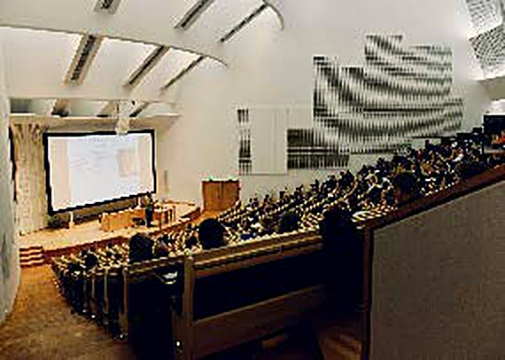

Formaciónpara profesores
Encuentra oportunidades para fortalecer tus competencias, explorar nuevas posibilidades y llevarlas a tu práctica educativa.

Próximas oportunidades

-
19 nov
Café Digital UAO: IA en la preparación de clases
PresencialUna conversación entre colegas sobre qué ha funcionado y qué no.
-
26 nov
Taller: diseña una actividad para modalidad híbrida
HíbridaSales con una actividad lista para llevar a tu próximo curso.
-
3 dic
Microcapacitación: evaluación en el aula virtual
VirtualTreinta minutos para configurar rúbricas y retroalimentación.
Rutas de formación
Trayectorias y cursos de mayor alcance, descritos por lo que podrás desarrollar.

Diseño de experiencias de aprendizaje
Estructurarás un curso a partir de resultados de aprendizaje, actividades y evaluación.
IA para la docencia
Desarrollarás criterios para incorporar inteligencia artificial con intención pedagógica.
Enseñanza híbrida y digital
Integrarás recursos, interacción y tecnología en experiencias híbridas o digitales.
Agenda y actividades
| Fecha | Actividad | Modalidad |
|---|---|---|
| 19 nov 2026 | Café Digital UAO: IA en la preparación de clases | Presencial |
| 26 nov 2026 | Taller: diseña una actividad para modalidad híbrida | Híbrida |
| 3 dic 2026 | Microcapacitación: evaluación en el aula virtual | Virtual |
| 21 ene 2027 | Café Digital UAO: herramientas para iniciar el semestre | Presencial |
| 28 ene 2027 | Taller: rúbricas y retroalimentación | Virtual |
| 11 feb 2027 | Microcapacitación: videoconferencia con interacción | Virtual |

Solicita acompañamiento
¿Quieres llevar lo que aprendes a un curso concreto? Te acompañamos.